Mise en production des projets de data science
Cours de 3e année à l’ENSAE-ENSAI
2026/2027
Introduction
Ressources associées
Slides
Site web
Contexte

- Qui sommes-nous ?
Contexte
- Qui sommes-nous ?
- des data scientists de l’Insee
- frustrés par l’approche souvent purement technique de la data science
- convaincus que les bonnes pratiques de développement valent à être enseignées
- , ,
Qu’est ce qu’un data scientist ?
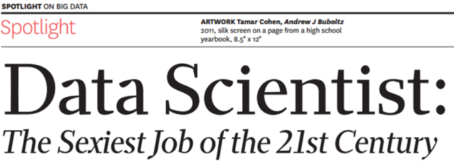
Tendance à la spécialisation : data analyst, data engineer, ML Engineer…
Rôle d’interface entre métier et équipes techniques
- Compétences mixtes : savoir métier, modélisation, IT
La notion de mise en production
- Mettre en production : faire vivre une application dans l’espace de ses utilisateurs
- Notion simple mais mise en oeuvre compliquée !
- Dépasser le stade de l’expérimentation
- Comprendre les besoins des utilisateurs
- Bonnes pratiques de développement
- Techniques informatiques d’industrialisation
La notion de bonnes pratiques
Origine : communauté des développeurs logiciels
Constats :
- le “code est plus souvent lu qu’écrit” (Guido Van Rossum)
- la maintenance d’un code est très coûteuse
Conséquence : un ensemble de règles informelles, conventionnellement acceptées comme produisant des logiciels fiables, évolutifs et maintenables
Pourquoi s’intéresser aux bonnes pratiques ?
L’activité du datascientist tend à se rapprocher de celle du développeur :
projets intenses en code
projets collaboratifs et de grande envergure
complexification des données et des infrastructures
déploiement d’applications pour valoriser les modèles
Contenu du cours
- Pré-requis
- Introduction au terminal
Linux(Linux 101) - Contrôle de version avec
Git(Git refresher)
- Introduction au terminal
- Bonnes pratiques de développement
- Travail collaboratif avec
Git - Qualité du code
- Structure des projets
- Traitement des données volumineuses
- Favoriser la portabilité d’une application
- Travail collaboratif avec
- Mise en production
- Introduction au format
YAML - Déploiement
- MLOps
- LLMOps (la nouveauté ❇️)
- Introduction au format
Site web du cours
Tout le contenu du cours est en open-source
- GitHub
- Pull Requests -> bonus
Modalités pédagogiques
- Apprentissage par la pratique
- Application : industrialisation d’un projet de ML
- Langage :
Python- Langage dominant dans le monde de la donnée
- Les principes présentés sont agnostiques au langage
- Environnement d’exécution : SSP Cloud
- Environnement de développement normalisé
- Véritable environnement de production
- Acquisition des bonnes pratiques
Evaluation
- Objectif : mise en pratique réaliste des notions étudiées
- Problématique métier
- Données réelles
- Evaluation en deux parties :
- En groupe : projet à construire selon 4 “parcours”
- Individuel : revue de code d’un autre projet
- Suivie d’une soutenance pour:
- vérifier si les notions sont comprises
- échanger sur le livrable
Partie 1️⃣ : bonnes pratiques de développement
Plan de la partie
1️⃣ Travail collaboratif avec Git
2️⃣ Qualité du code
3️⃣ Structure des projets
4️⃣ Traitement des données volumineuses
5️⃣ Favoriser la portabilité d’une application
1️⃣ Le travail collaboratif avec Git
Pourquoi utiliser Git ?
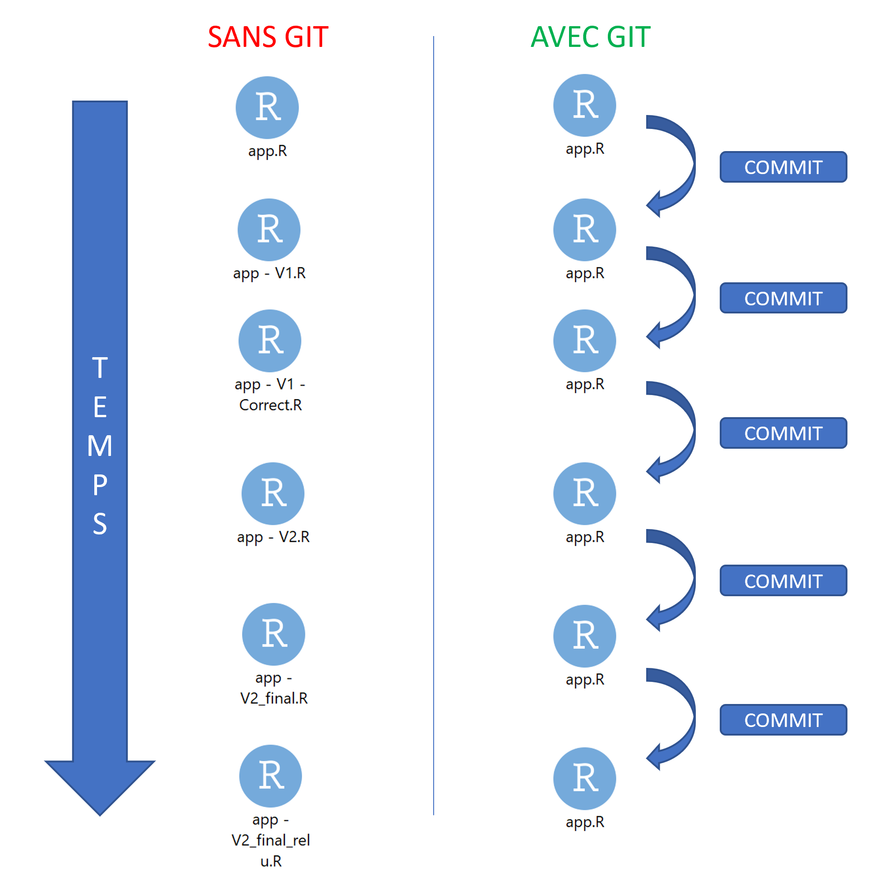
Concepts essentiels
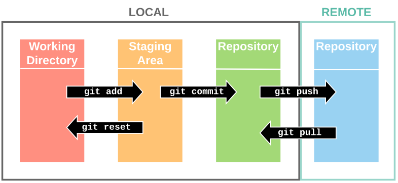
Bonnes pratiques
Que versionne-t-on ?
- Essentiellement du code source
- Pas d’outputs (fichiers
.html,.pdf, modèles…) - Pas de données, d’informations locales ou sensibles
Note
Pour définir des règles qui évitent de committer tel ou tel fichier, on utilise un fichier nommé .gitignore.
Si on mélange du code et des éléments annexes (output, données…) dans un même dossier, il faut consacrer du temps à ce fichier.
N’hésitez pas à y ajouter des règles conservatrices (par exemple *.csv, *.parquet).
Bonnes pratiques
Format des commits
- Fréquence
- Aussi souvent que possible
- Le lot de modifications doit “faire sens”
- Messages
- Courts et informatifs (comme un titre de mail)
- Décrire le pourquoi plutôt que le comment dans le texte
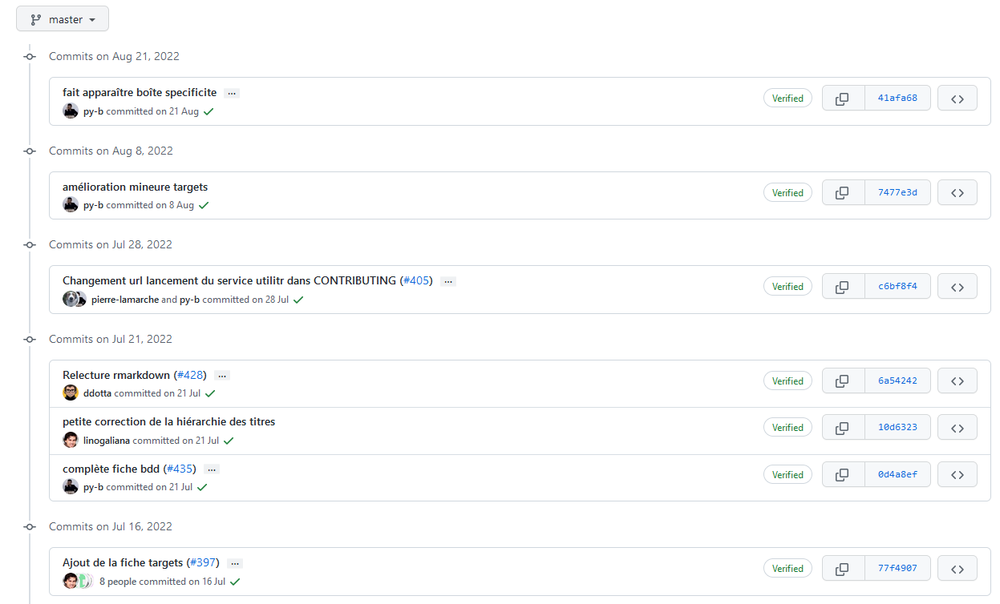
Outils pour le travail collaboratif
- L’éco-système
Gitfacilite le travail collaboratifGit: modèle des branchesGitHub/GitLab: Issues, Pull Requests, Forks
Le modèle des branches
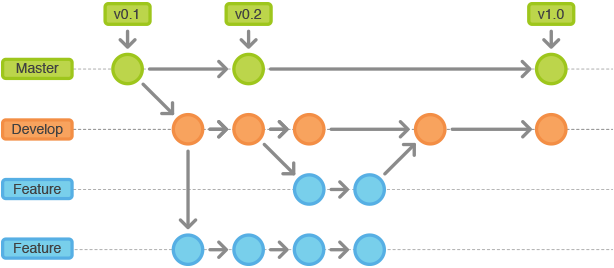
Les outils de contribution
Issue : soumettre un problème ou une suggestion aux développeurs d’un projet
Pull Request : proposer aux développeurs d’un projet d’intégrer des modifications
Fork : faire la copie d’un projet existant dans son espace personnel
- Indispensable pour faire une pull request à un dépôt sur lequel on n’a pas les droits
Une organisation courante : le GitHub flow
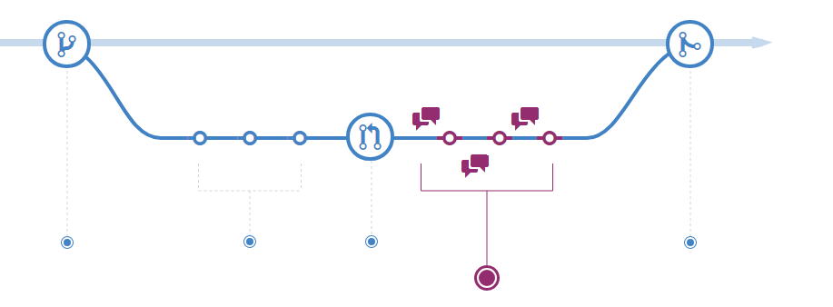
Description plus détaillée : ici
2️⃣ Qualité du code
Enjeux
D’une vision utilitariste du code à une vision du code comme outil de communication
Favoriser la lisibilité et la maintenabilité
Faciliter la réutilisation
Principes généraux
Adopter les standards communautaires
Utiliser des fonctions
(Auto-)documenter son code
1️⃣ Standards communautaires
“Good coding style is like correct punctuation: you can manage without it, butitsuremakesthingseasiertoread”
1️⃣ Standards communautaires - Outils
- Linters : diagnostic de qualité du code
- Formatters : application automatique des standards
Astuce
- Exemples d’erreurs repérées par un linter :
- lignes de code trop longues ou mal indentées, parenthèses non équilibrées, noms de fonctions mal construits…
- Exemples d’erreurs non repérées par un linter :
- fonctions mal utilisées, arguments mal spécifiés, structure du code incohérente, code insuffisamment documenté…
2️⃣ Utiliser des fonctions
Règle d’or
Il faut utiliser une fonction dès qu’on utilise une même portion de code plus de deux fois (don’t repeat yourself (DRY))
- Limite les risques d’erreurs liés aux copier/coller
- Rend le code plus lisible et plus compact
- Un seul endroit du code à modifier lorsqu’on souhaite modifier le traitement
- Facilite la réutilisation et la documentation du code !
Règles pour écrire des fonctions pertinentes
- Une tâche = une fonction
- Une tâche complexe = un enchaînement de fonctions réalisant chacune une tâche simple
- Limiter l’utilisation de variables globales.
3️⃣ Documenter son code
Documenter le pourquoi plutôt que le comment
Privilégier l’auto-documentation via des nommages pertinents
Comment bien documenter un script ?
- Minimum 🚦 : décrire ce que le code fait au début du script
- Bien 👍 : commenter les parties “délicates” du code
- Idéal 💪 : documenter ses fonctions avec des docstrings
3️⃣ Structure des projets
Enjeux
Favoriser la lisibilité et la maintenabilité
Enjeux spécifiques à la data science
- Expérimentation
- Non-linéarité
- Reproductibilité
Principes généraux
Favoriser une structure modulaire selon l’état du projet
- Exploration : travail à partir de notebooks
- Industrialisation : adopter une structure type package
Adopter les standards communautaires
(Auto-)documenter son projet
1️⃣ Phase d’exploration : notebooks
- Avantages
- Interactivité : idéal pour l’expérimentation
- Communication : diffusion de résultats sous forme exécutable
- Inconvénients
- Reproductibilité généralement limitée
- Pas adaptés pour l’automatisation
- Mal gérés par le contrôle de version
2️⃣ Industrialisation : structure modulaire
Premier niveau : structuration du code
Adopter une structure type package
- Des fonctions rangées dans des modules
- Un script principal (
main) orchestre les traitements - Utilisation de chemins relatifs uniquement
2️⃣ Industrialisation : structure modulaire
- Deuxième niveau : structuration du projet
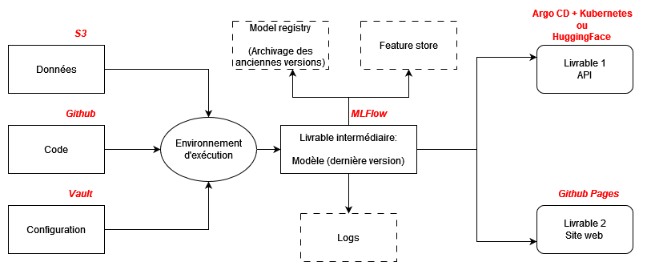
3️⃣ Adopter les standards communautaires
- Templates de projets : Cookiecutters
- La cohérence intra-projet doit toujours primer
4️⃣ Documenter son projet
- Favoriser l’auto-documentation via des nommages pertinents
L’auto-documentation : illustration
├── report.ipynb
├── correlation.png
├── data.csv
├── data2.csv
├── fig1.png
├── figure 2 (copy).png
├── report.pdf
├── partial data.csv
├── script.py
└── script_final.py- Difficile de rentrer dans le projet…
- Tout au même niveau
- Titres non informatifs
L’auto-documentation : illustration
├── data
│ ├── raw
│ │ ├── data.csv
│ │ └── data2.csv
│ └── interim
│ └── partial data.csv
├── notebooks
│ └── report.ipynb
├── src
| ├── script.py
│ └── script_final.py
└── reports
├── report.pdf
└── figures
├── fig1.png
├── figure 2 (copy).png
├── figure10.png
└── correlation.png- Une structure déjà plus lisible !
- Les titres restent non informatifs
L’auto-documentation : illustration
├── data
│ ├── raw
│ │ ├── dpe_logement_202103.csv
│ │ └── dpe_logement_202003.csv
│ └── interim
│ └── dpe_logement_merged_preprocessed.csv
├── notebooks
│ └── report.ipynb
├── src
| ├── main.R
| ├── preprocessing.R
│ └── generate_plots.R
└── reports
├── report.pdf
└── figures
├── histogram_energy_diagnostic.png
├── barplot_consumption_pcs.png
├── correlation_matrix.png
└── correlation.png- Une structure auto-documentée
- On comprend le projet sans même lire le code
4️⃣ Documenter son projet
Favoriser l’auto-documentation via des nommages pertinents
Inclure un fichier
README.mdà la racine du projet- Carte d’identité et vitrine du projet
- Présente le contexte et le fonctionnement du projet
Si open-source : inclure une licence
Application
Bonnes pratiques de développement
- Consignes sur le site du cours
- Partie 0️⃣ : initialisation de l’environnement et du projet
- Partie 1️⃣ : qualité du code
- Partie 2️⃣ : adoption d’une structure modulaire
4️⃣ Traitement des données volumineuses
“The obligatory intro slide”
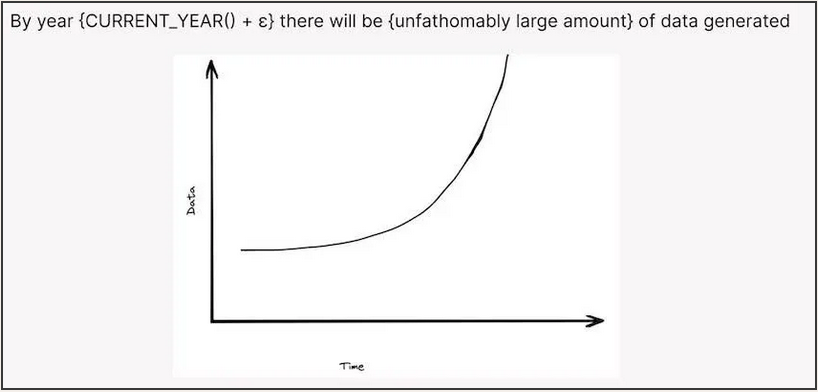
Enjeux
- Tendance à la massification des données
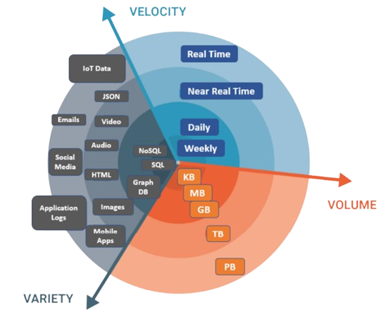
Enjeux
- Nécessité de bien distinguer :
- Storage : qu’est-ce que l’on stocke et comment ?
- Compute : qu’est-ce que l’on calcule et où ?
- Evolutions des infrastructures de données :
- Bases de données : couplage fort, scalabilité verticale
- Infrastructures big data : couplage fort, scalabilité horizontale
- Infrastructures cloud : couplage faible, scalabilité hybride
1️⃣ A l’origine : les bases de données
Historiquement : stockage dans des bases de données
80’s : essor des bases de données relationnelles
- Modèle de la data warehouse
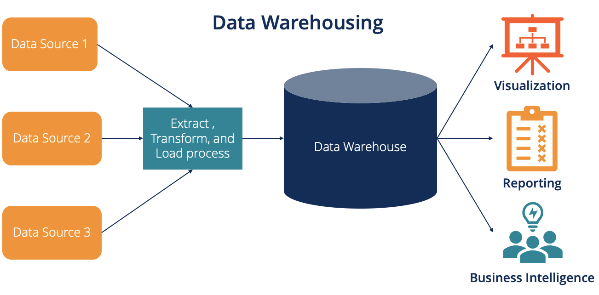
1️⃣ Limites des data warehouses
- Peu adaptées aux données big data
- Limitées aux données structurées
- Nécessiter de fixer un schéma a priori
- Passage à l’échelle coûteux : scalabilité verticale
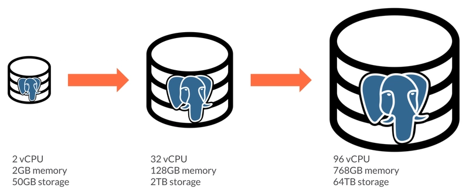
2️⃣ L’arrivée du data lake (fin 2000’s)
- Un stockage peu coûteux fait pour des données
- Volumineuses
- Brutes
- Sans structure définie a priori
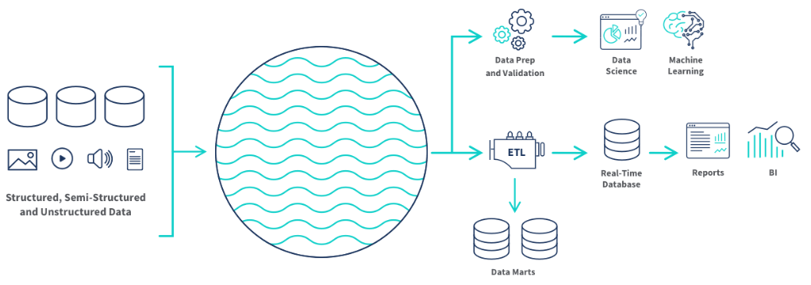
2️⃣ Infrastructures big data
- Fin 2000’s : une architecture de référence (Hadoop)
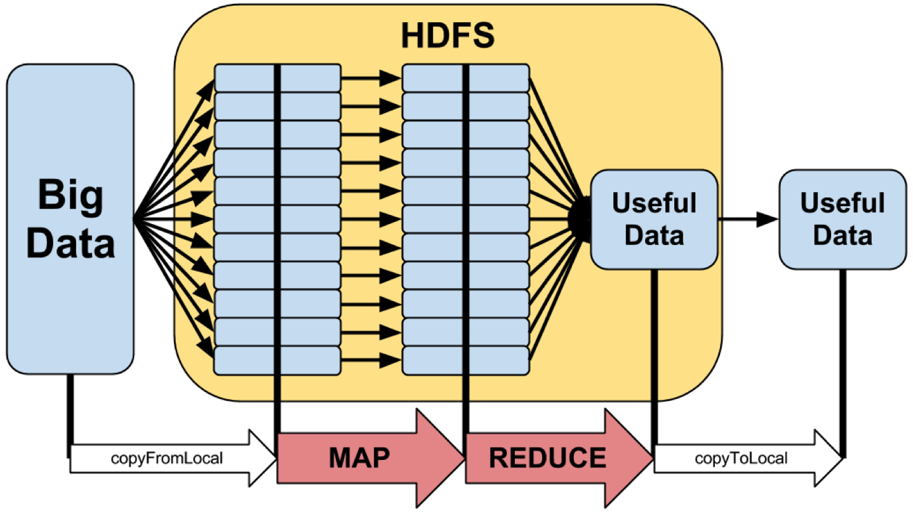
3️⃣ “Big Data is dead” ?
- 2010’s : déclin de popularité des infrastructures Hadoop
- Limite : co-localisation du stockage et du calcul
- Jordan Tigani : Big Data is dead
- Besoins de storage >> besoins de compute
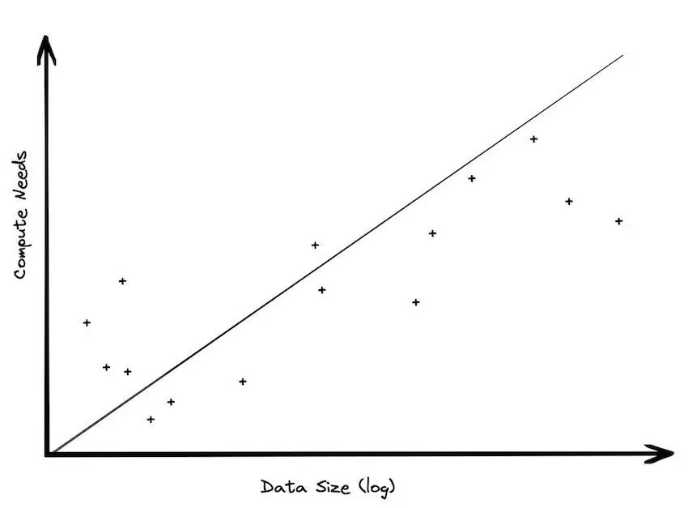
3️⃣ Infrastructures cloud
- Fin 2010’s : les technologies cloud permettent l’émergence d’architectures faiblement couplées
- Storage : data lake basé sur du stockage objet
- Compute : des environnements de traitement élastiques aux besoins (conteneurs)
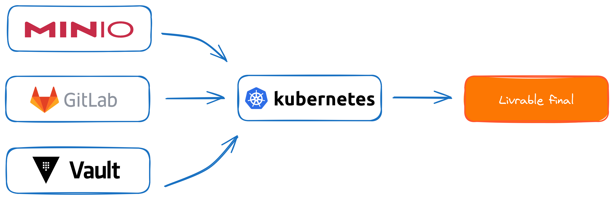
3️⃣ La frontière du big data se décale
Innovations matérielles (serveurs, CPUs, RAM)
Formats de données plus efficients (Parquet)
Des outils de traitement larger-than-memory
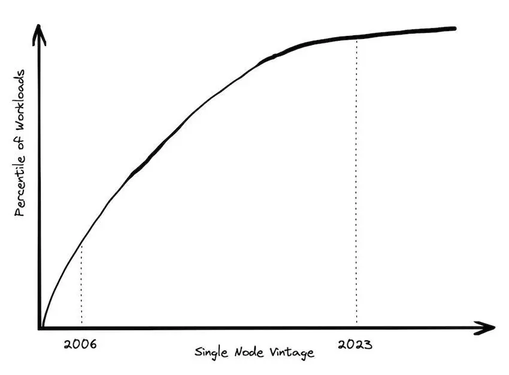
3️⃣ Le format CSV
- Le format usuel pour les données tabulaires est le
CSV- Facilement lisible
- Non-compressé : espace disque élevé
- Orienté ligne : mal adapté aux traitements analytiques
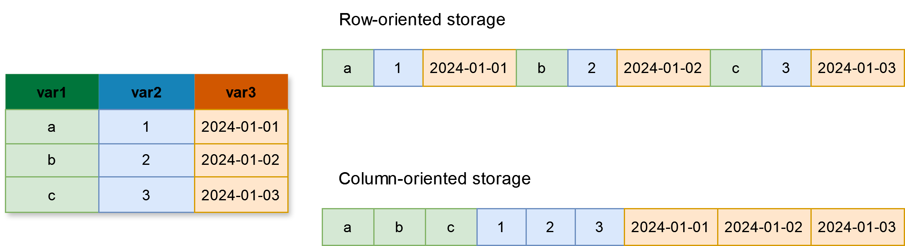
3️⃣ Le format Parquet : propriétés
- Orienté colonne
- Adapté aux traitements analytiques
- Conçu pour être écrit une fois mais lu fréquemment
- Optimisé
- Compression (jusqu’à 87 % moins d’espace qu’un CSV)
- Lecture du fichier (jusqu’à 34x plus rapide qu’un CSV)
- Interopérable
- Gestion native des méta-données
3️⃣ Parquet : partitionnement
- Division en blocs des données selon un critère
- Optimise la lecture pour certaines requêtes
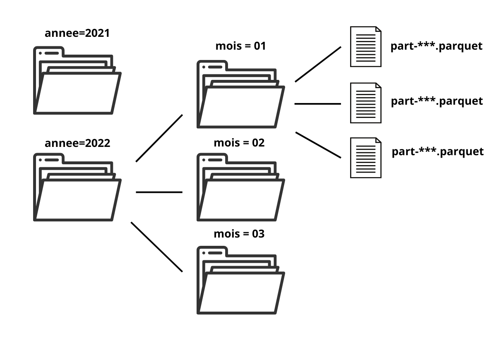
3️⃣ Traitement in-memory
Parquetne résout pas tout- L’espace disque est optimisé
- Les données décompressées doivent passer en RAM
- Avec un framework traditionnel de calcul en mémoire (
Pandas,dplyrenR, etc.)- Gain en lecture grâce à la compression
Parquet - Obligé de charger l’ensemble du fichier en mémoire
- Perte de l’avantage de la structure en colonne
- Gain en lecture grâce à la compression
3️⃣ Traitement larger-than-memory
- Calcul larger than memory optimisé
- Principes communs :
- Orientation colonne : synergie avec
Parquet - Lazy evaluation : très efficient en données
- Orientation colonne : synergie avec
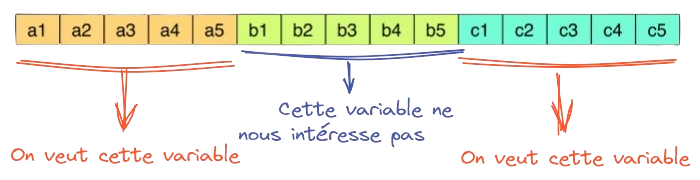
3️⃣ DuckDB : un connecteur interopérable entre sources de données
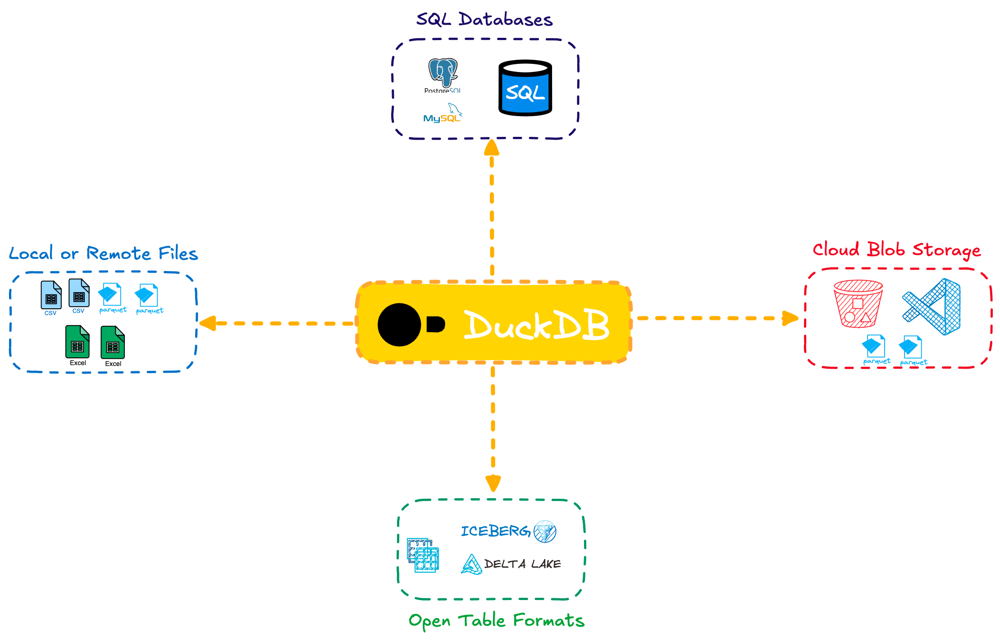
Résumé : pour traiter la volumétrie
Choisir une infrastructure adaptée aux besoins
- Les technologies cloud offrent un très bon compromis coût / flexibilité
Utiliser un format de données adapté (
Parquet)Utiliser des outils de traitement adaptés
- Suffisant la plupart du temps : calcul larger than memory optimisé (
DuckDB) - Si volumétrie massive : calcul distribué (
Spark)
- Suffisant la plupart du temps : calcul larger than memory optimisé (
5️⃣ Portabilité
“It works… on my machine”
On a construit un projet lisible, structuré et versionné
Peut-on partager notre projet ?
- En théorie, oui !
- En pratique, c’est toujours plus compliqué…
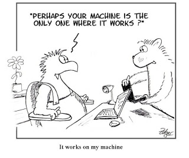
Pourquoi se préoccuper de portabilité ?
- Considérons un workflow standard de data science
- Installer une distribution de
Pythonsur son poste - Développer un projet en installant les packages nécessaires
- Passer au projet suivant et ainsi de suite
- Installer une distribution de
- Quels problèmes peuvent se poser ?
Pourquoi se préoccuper de portabilité ?
Conflits de version : différents projets peuvent requérir des versions différentes d’un même package
Version de
Pythonfixe, celle de l’installation systèmeReproductibilité limitée : difficile de dire quel projet nécessite quel package
Portabilité limitée : difficile de fixer dans un fichier les dépendances spécifiques à un projet
Le critère de la portabilité
- Un code n’est pas auto-suffisant, il contient en général de nombreuses adhérences
- Un langage de programmation et sa version
- Des dépendances
- Des librairies système
- Portabilité : capacité d’un code à s’exécuter dans un environnement différent que celui de développement
- Enjeu central de la mise en production !
Environnements virtuels : fonctionnement
- Dossier “auto-suffisant” qui :
- contient un intepréteur
Pythonet des packages - est isolé des autres environnements existants
- contient un intepréteur
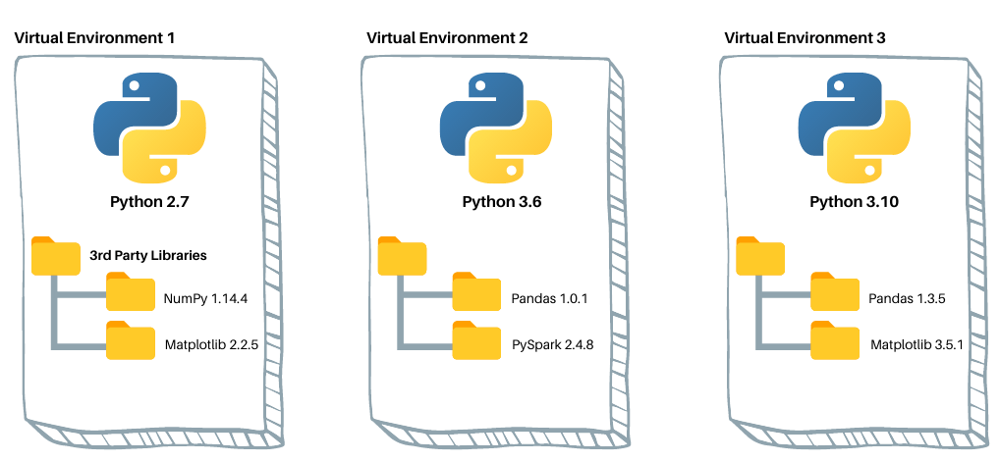
Environnements virtuels : implémentations
- Implémentation standard de
Python: venv- Il en existe bien d’autres (
virtualenv,pipenv, etc.)
- Il en existe bien d’autres (
- Très lié au mode d’installation des packages
- Python “standard” :
venv+pip - Limites :
- Lenteur de la résolution des dépendances
- Dépendance à la version système de
Python
- Python “standard” :
- Une implémentation qui monte très (très) vite : uv
uv : un outil pour les gouverner tous
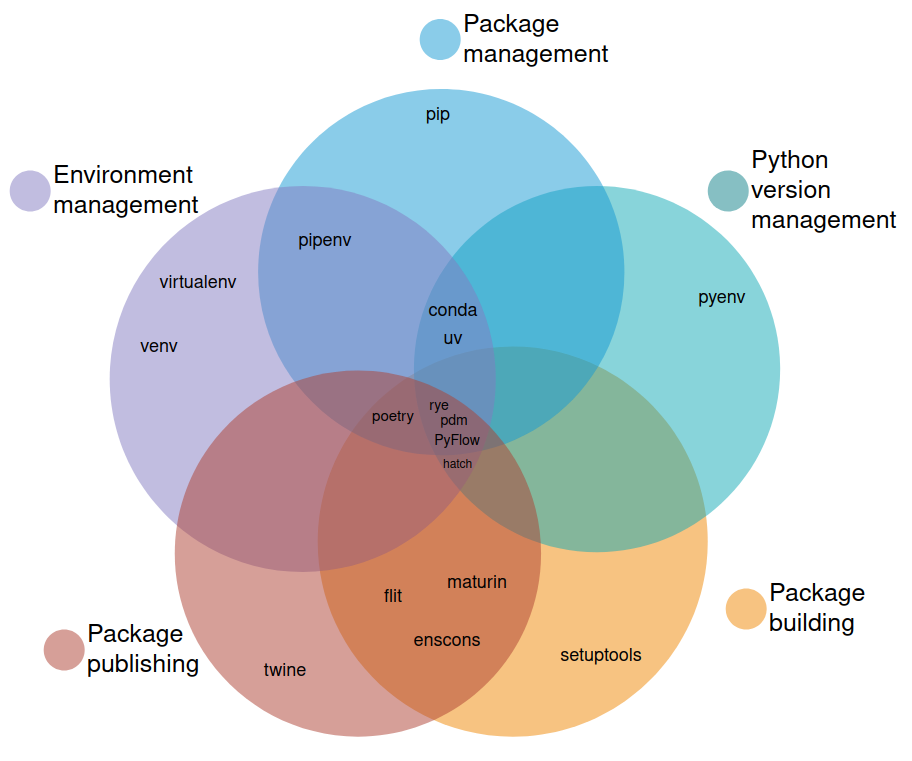
uv : utilisation
- Initialiser un projet :
uv init <nom_du_projet>- Génère une structure de projet
- Installer un package :
uv add scikit-learn- Génère automatiquement un environnement virtuel (
venv)
- Génère automatiquement un environnement virtuel (
- Exécuter un script :
uv run script.py- Le script est exécuté avec l’interpéteur
Pythonde l’environnement virtuel
- Le script est exécuté avec l’interpéteur
Spécifier l’environnement du projet
Développer dans un environnement virtuel est une bonne pratique
Favorise la reproductibilité
- A chaque installation d’un package,
uvmet à jour le fichieruv.lockqui spécifie toutes les dépendances uv sync-> recrée l’environnement complet
- A chaque installation d’un package,
Favorise la portabilité
- A chaque installation d’un package,
uvmaj le fichierpyproject.yamlqui spécifie les packages nécessaires - A commit sur
Gitpour distribuer la “recette” de l’environnement
- A chaque installation d’un package,
Faire évoluer les versions
- Arbitrage à trouver entre :
- Reproductibilité : spécifier finement les versions
- Fonctionnalités et sécurité : faire évoluer les versions
Environnements virtuels : limites
- Limités au langage de programmation et ses packages :
- Pas de gestion des librairies système qui dépendent du système d’exploitation
- Non adaptés à des projets multi-langages
- Les environnements virtuels facilitent la portabilité, mais ne suffisent pas à la garantir
Le gold-standard de la portabilité
- Au lieu de distribuer la recette pour recréer la bonne machine, peut-on distribuer directement la bonne machine ?
- Idée 1 : distribuer des machines physiques : complexe…
- Idée 2 : distribuer des machines virtuelles : possible mais coûteux
- Les conteneurs offrent le compromis idéal
- Isolation complète de l’environnement
- Relativement légers et donc facilement redistribuables
Conteneurs vs. machines virtuelles
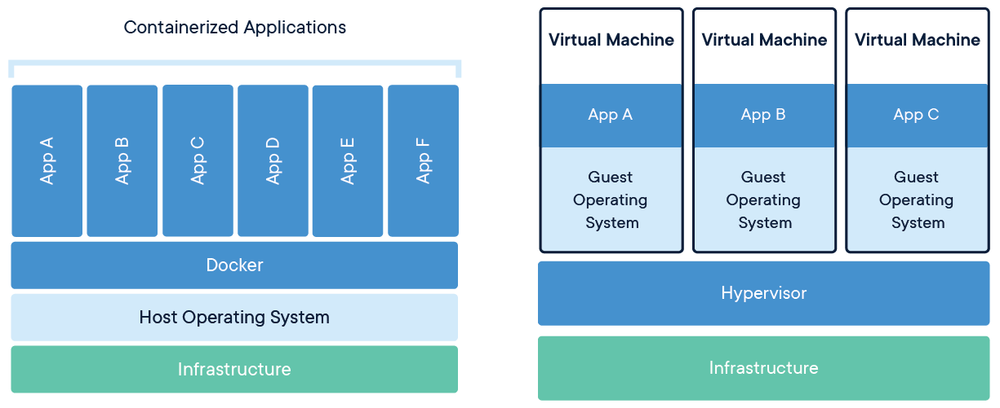
Source : docker.com
Conteneurs : implémentations
- Plusieurs implémentations des conteneurs
Dockerest largement prédominant
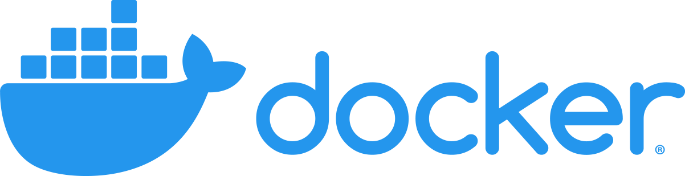
Docker : installation
Docker: outil en ligne de commande (CLI)- Instructions selon le système d’exploitation
- Environnement “bac à sable” : Play with Docker
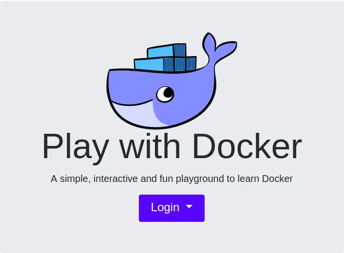
Le Dockerfile
- Exemple : conteneurisation d’une application interactive Flask
Docker : fonctionnement
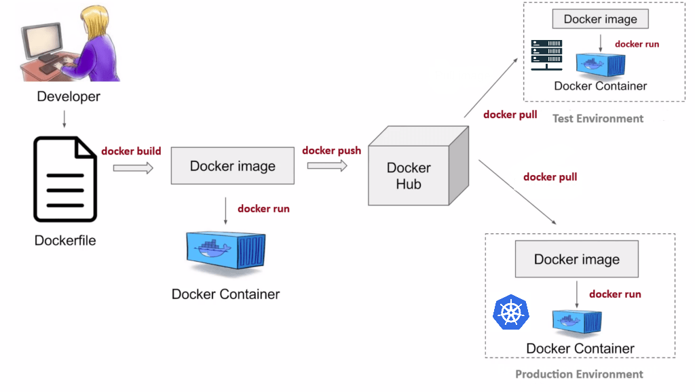
Source : k21academy.com
Docker en pratique
- Présentation détaillée sur la page du cours
- Concepts (caching, buildtime/runtime)
- Commandes essentielles
- Application à un exemple concret
Application
Portabilité du projet
- Consignes sur le site du cours
- Partie 3️⃣ : construction d’un projet portable et reproductible
- Construire un environnement virtuel pour le projet
- Conteneuriser l’application avec
Docker
- Partie 3️⃣ : construction d’un projet portable et reproductible
Partie 2️⃣ : mise en production
Le “mur de la production”
Mise en production
- Mettre en production : faire vivre une application dans l’espace de ses utilisateurs
- Servir : déployer l’application dans un format pertinent auprès de ses utilisateurs potentiels
- Faire vivre : gérer le cycle de vie et favoriser l’amélioration continue
- Multiples dimensions : connaissance métier, organisation, infrastructure, outils techniques..
Favoriser la continuité
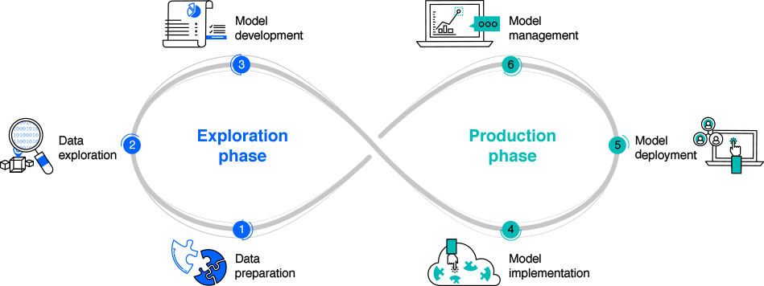
Source : ibm.com
- Comment faire ?
- Application des bonnes pratiques de développement
- Besoin de nouveaux concepts et outils : DataOps
Le DataOps
- Origine : mouvement DevOps
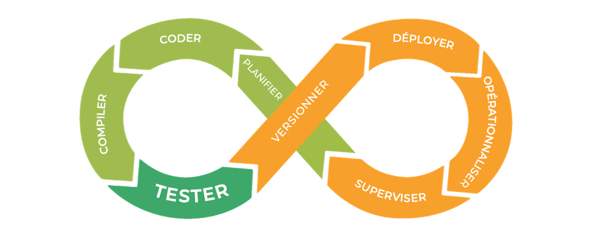
DataOps : construction de pipelines de données
MLOps : déploiement et maintenance de modèles de ML
Plan de la partie
6️⃣ Introduction au format YAML
7️⃣ Déploiement
8️⃣ MLOps
9️⃣ LLMOps ❇️
6️⃣ Introduction au format YAML
Qu’est-ce que le format YAML ?
- YAML Ain’t Markup Language
- Langage de sérialisation de données
- Structure expressive mais lisible
Pourquoi s’intéresser au YAML ?
- Outil standard pour les fichiers de configuration
- Simplicité et puissance du paradigme déclaratif
- On décrit l’état final souhaité
- L’implémentation est laissée au moteur sous-jacent
YAML vs. JSON
YAMLest un superset deJSON- Tout fichier
JSONvalide est un fichierYAMLvalide
- Tout fichier
- Structure basée sur l’indentation
- Favorise la lisibilité
- Plus prône aux erreurs
- Convertisseurs : yaml-to-json, json-to-yaml
Caractéristiques d’un fichier YAML
Extension :
.yamlou.ymlStructure hiérarchique basée sur des paires clé-valeur
Différents types à disposition (numériques, strings, booléens, listes)
Validation et erreurs fréquentes
- Principale erreur : mauvaise indentation
- Utiliser 2 espaces (pas de tabulation!)
- Outils de validation :
- Support natif dans la plupart des IDE
- Linters : YAMLlint
YAML et l’approche GitOps
- Le YAML est le langage privilégié de l’approche GitOps
- Les manifestes sont déclarés en
YAML(paradigme infrastructure as code) - Les manifestes sont stockés sur un dépôt
Git(approche GitOps)
- Les manifestes sont déclarés en
- Cette approche a de nombreux avantages :
- Reproductibilité
- Traçabilité
- Automatisation
7️⃣ Déploiement
La mise en production
- Mettre en production : faire vivre une application dans l’espace de ses utilisateurs
- Service : déployer l’application dans un format qui répond aux besoins des utilisateurs potentiels
- Faire vivre :
- Superviser l’application pour la rendre performante
- Favoriser l’amélioration continue
- L’objectif de ce chapitre est de convertir un projet maintenable et portable en un service exploitable
Un sujet large
- Les questions essentielles à se poser :
- Quel format adapté pour répondre aux besoins ?
- Quelle infrastructure de production pour assurer la performance et le passage à l’échelle ?
- Comment superviser l’application pour assurer sa résilience en production ?
- Comment automatiser le processus de déploiement pour permettre l’amélioration continue ?
- De nombreuses solutions techniques possibles
- Présentation des concepts standards
Formats de valorisation
- Critères à prendre en compte :
- Quels sont les utilisateurs potentiels ?
- Quels sont leurs besoins ?
- Exemple “fil rouge” : comment servir un projet de ML à ses utilisateurs potentiels ?
Servir un projet de ML
- Mettre à disposition le code pour entraîner le modèle
- Reproductible… si on a les données et les ressources
- Mettre à disposition le modèle entraîné
- Audience technique et adhérence au framework d’entraînement du modèle
- Exposer le modèle via une API
- Audience technique mais plus large car interopérable
- Exposer le modèle via une interface interactive
- Audience large mais plus coûteux
Servir un modèle de ML via une API
- Construire une API pour servir le modèle
- Interface entre l’utilisateur et le modèle entraîné
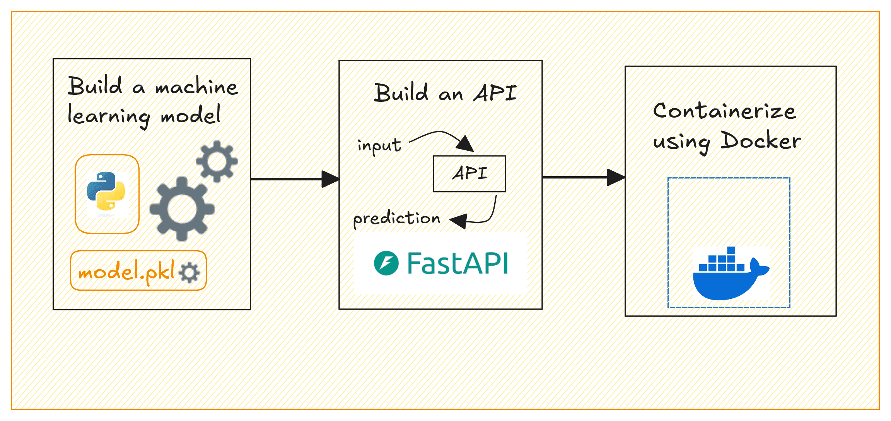
Les APIs : définition formelle
Une API (application programming interface) est une interface logicielle qui permet de « connecter » un logiciel ou un service à un autre logiciel ou service afin d’échanger des données et des fonctionnalités.
- Définition peu informative : avec cette définition tout est plus ou moins une API…
Les APIs : définition opérationnelle
- Une API est un contrat logiciel qui définit :
- Ce que l’on peut demander
- Sous quel format
- Ce que l’on reçoit en retour
- Une API permet à deux systèmes de communiquer sans exposer leur implémentation interne
Les APIs REST
- API RESTful : API conforme au style d’architecture REST
- Repose sur le protocole HTTP
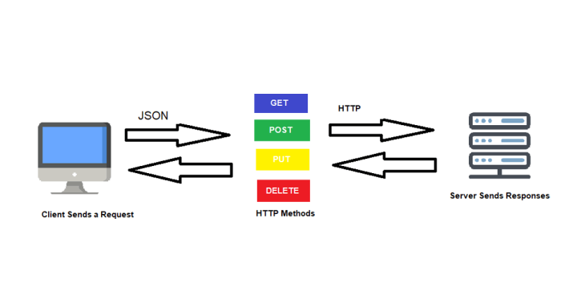
Exemples d’API REST
- Le client :
- envoie des requêtes HTTP (
GET,POST, etc.) - à un serveur accessible depuis une URL
- sur un certain endpoint qui expose le service
- envoie des requêtes HTTP (
Exemple : https://api-adresse.data.gouv.fr/search/?q=comédie&type=street
- Le serveur renvoie une réponse : un code retour et de la donnée (en l’absence d’erreur), souvent au format
JSON
Architecture cible
- Construire une API pour servir le modèle
- Interface entre l’utilisateur et le modèle entraîné
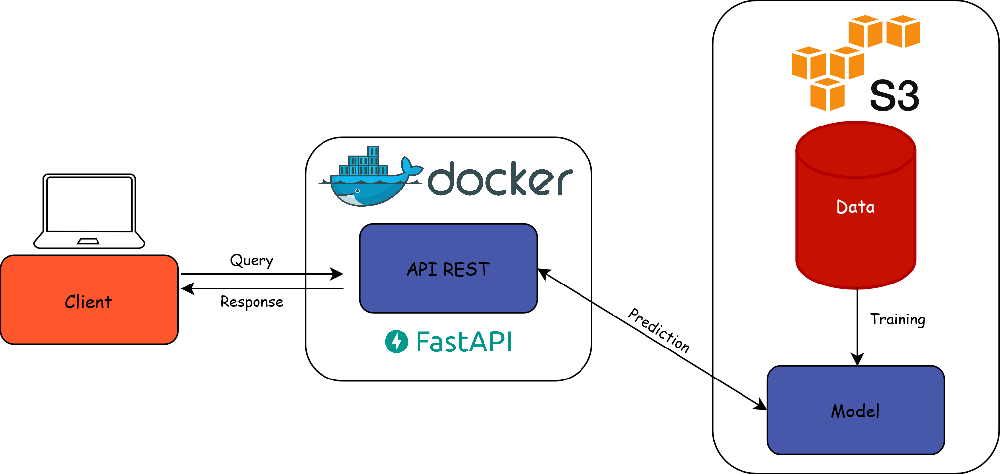
De l’API locale au service déployé
- On a les outils pour construire une API locale
- Du code applicatif auquel il faut rajouter une API
- Une couche de stockage pour le modèle entraîné
- La conteneurisation pour encapsuler l’application
- Il nous manque des outils pour en faire un service déployé et résilient
- Un environnement de production pour le déploiement
- Des outils de supervision pour gérer la charge
- Des outils d’automatisation pour l’amélioration en continu de l’application
Environnement de production
Dépend essentiellement de l’infrastructure à disposition
Propriétés recherchées :
- Adapter les ressources (scaler) selon les besoins
- Déploiements reproductibles et automatisés
- Monitoring de l’état de santé des applications
Solution : utiliser un orchestrateur de conteneurs
- Base du
SSP Cloud: Kubernetes
- Base du
Fonctionnement de Kubernetes
- Approche Infrastructure As Code : on déclare l’état désiré du déploiement,
Kubernetess’assure en continu qu’il correspond à l’état réel
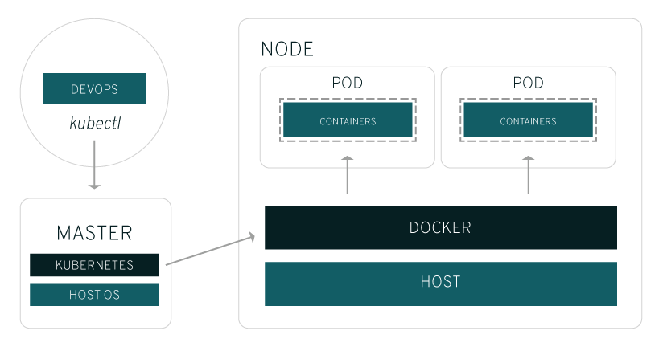
L’approche CI/CD
- Intégration continue (CI) : chaque commit déclenche un processus “test, build and release”
GitHub: GitHub ActionsGitLab: GitLab CI/CD
- Déploiement continu (CD) : les nouvelles releases sont automatiquement déployées
- Sur le
SSP Cloud: ArgoCD
- Sur le
CI : implémentation
- Principe : commit -> exécution d’une série d’étapes
- Script exécuté sur une VM : runner
- Mise à disposition d’un output : artifact
- Multiples outputs possibles
CI : anatomie d’un fichier de CI
- Spécification : fichier
.yamlqui paramétrise le runner- ⚠️ Situé dans le dossier
.github/workflows/
- ⚠️ Situé dans le dossier
.github/workflows/ci.yaml
name: Build Docker image
on:
push:
branches:
- main
tags:
jobs:
docker:
runs-on: ubuntu-latest
steps:
- name: Set up QEMU
uses: docker/setup-qemu-action@v3
- name: Set up Docker Buildx
uses: docker/setup-buildx-action@v3
- name: Docker meta
id: meta
uses: docker/metadata-action@v5
with:
images: ensae-reproductibilite/api-titanic
- name: Login to Docker Hub
uses: docker/login-action@v3
with:
username: ${{ secrets.DOCKERHUB_USERNAME }}
password: ${{ secrets.DOCKERHUB_TOKEN }}
- name: Build and push
uses: docker/build-push-action@v5
with:
push: true
tags: ${{ steps.meta.outputs.tags }}
labels: ${{ steps.meta.outputs.labels }}CI/CD : implémentation sur Kubernetes
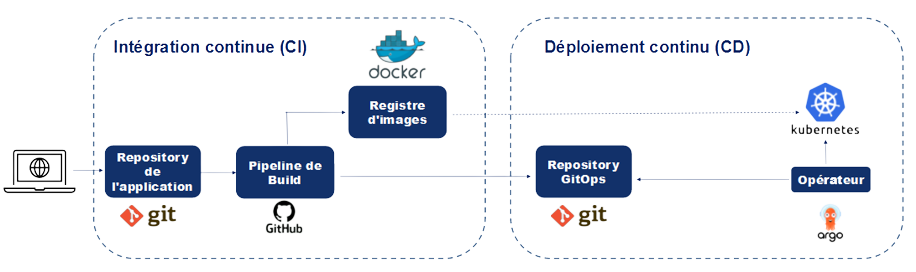
Conclusion
- On a construit un pipeline reproductible et automatisé
- Comment tenir compte des spécificités du ML ?
- Approche MLOps
Application
Mise en production
- Consignes sur le site du cours
- Partie 4️⃣ : automatisation de la livraison d’une application avec l’intégration continue
- Partie 5️⃣ : déploiement d’une application et industrialisation
8️⃣ MLOps
Motivation
- Intégrer :
- les principes DataOps
- les spécificités des projets de ML

MLOps : principes
Reproductibilité
Contrôle de version
Automatisation
Collaboration
Monitoring
MLOps : implémentation
- De nombreux frameworks implémentent les principes du MLOps
- Catalogue du
SSP Cloud: MLFlow
- Catalogue du
- Avantages de
MLflow:- Open-source
- Couvre l’entièreté du cycle de vie d’un modèle ML
- Agnostique au package ML utilisé
- Intégration avec
Kubernetes
MLFlow : vue d’ensemble
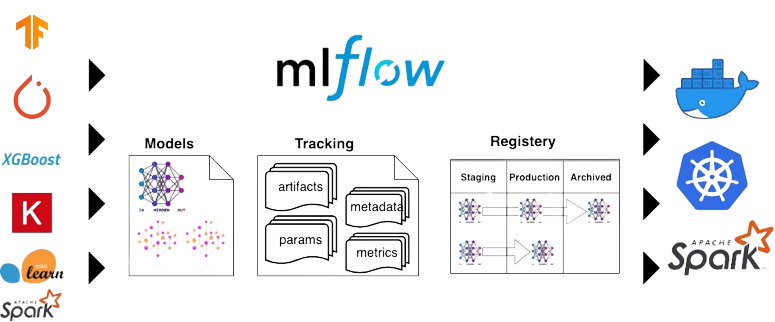
MLFlow : Tracking server
- “Une API et une interface utilisateur pour enregistrer les paramètres, les versions du code, les métriques et les artefacts”
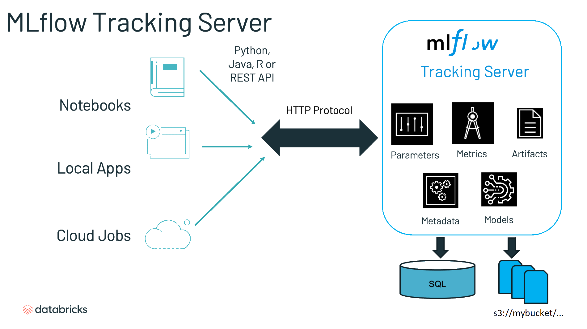
MLFlow : Models
- “Une convention pour ‘packager’ des modèles de machine learning sous plusieurs formes”
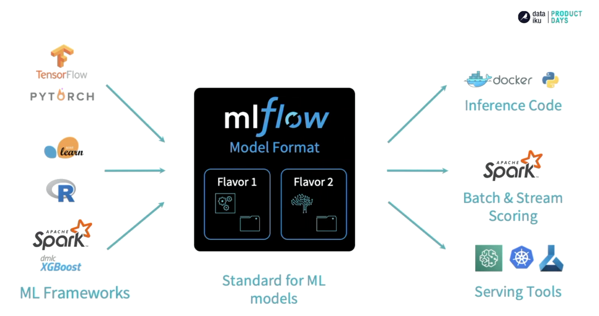
MLFlow : Model registry
- “Un entrepôt centralisé de modèles, un ensemble d’API et une interface utilisateur pour gérer collaborativement le cycle de vie complet d’un modèle MLflow”

Servir le modèle (sans MLFlow)
Servir le modèle (avec MLFlow)
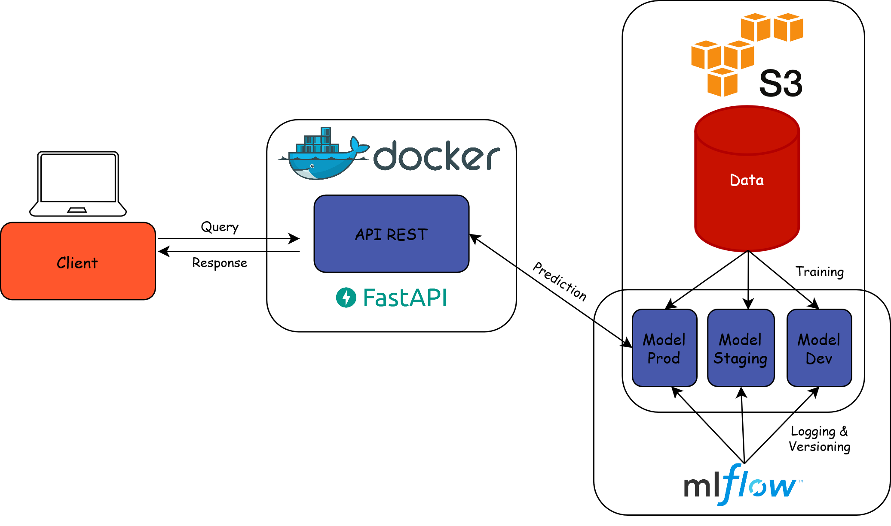
Suivi du modèle
- Pourquoi surveiller un modèle en production ?
- Détecter d’éventuels biais des données d’entraînement
- Détecter une instabilité du modèle
- Amélioration continue du modèle
- ⚠️ Le mot surveillance d’une application/modèle recouvre des réalités différentes
Surveillance selon l’informaticien
Surveiller une application est partie intégrante de l’approche DevOps
Contrôle technique de l’API :
- Latence
- Mémoire
- Utilisation disque
- …
Surveillance selon le data scientist
Surveiller un modèle ML est partie intégrante de l’approche MLOps
Contrôle méthodologique du modèle
Performance en temps réel du modèle souvent impossible, utilisation de proxys :
- Data drift : la distribution des données d’entrée change dans le temps
- Concept drift : la relation modélisée change dans le temps
Comment surveiller un modèle en production ?
Intégration de logs dans l’API
Récupération et mise en forme des logs
Suivi de métriques de ML
Mise en place d’un système d’alertes
Résultat : un pipeline reproductible
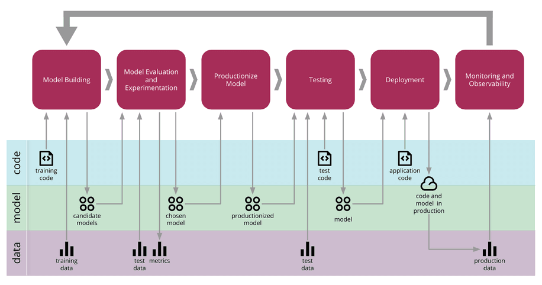
Source: martinfowler.com
Application
MLOps
- Consignes sur le site du cours
- Partie 6️⃣ : application des principes MLOps avec
MLFlow
- Partie 6️⃣ : application des principes MLOps avec
Bonnes pratiques pour la mise en production des projets de data science (retour homepage)
Comment favoriser la portabilité ?
Constuire des “bulles” plus ou moins isolées autour de son projet afin de packager l’environnement nécessaire
Des outils dédiés :